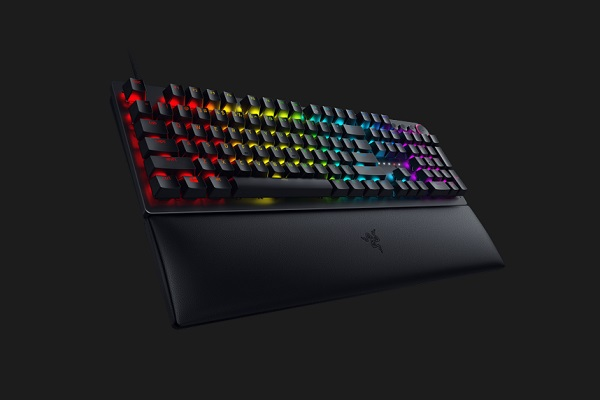
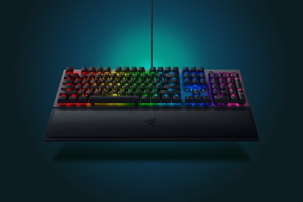
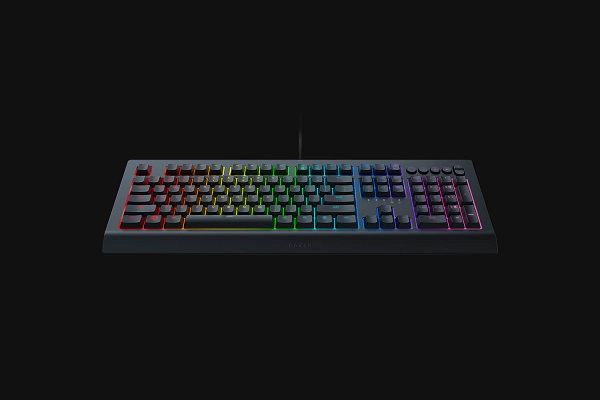

- Switches ópticos de Razer con una fuerza de accionamiento de 45 G.
- Vida útil de 100 millones de pulsaciones.
- Retroiluminación Chroma con 16,8 millones de opciones de color personalizables.
- Iluminación inferior con 38 zonas de personalización.
- Reposamuñecas ergonómico con 24 zonas personalizables de iluminación inferior.
- Dial digital multifuncional.
- Controles multimedia dedicados.
- Almacenamiento híbrido integrado con capacidad para hasta cinco perfiles.
- Compatible con Razer Synapse 3.
- Teclas totalmente programables con grabación simultánea de macros.
- Reconocimiento multitáctil de hasta 10 teclas simultáneamente.
- Opción de modo de juego.
- Cable de fibra trenzada.
- Tasa de sondeo de 1000 Hz.
- Placa superior mate de aluminio
- Compatible con Xbox One para entrada básica
Hunstman


- Switches mecánicos Razer™ diseñados para jugar.
- Vida útil de 80 millones de pulsaciones.
- Iluminación personalizable Razer Chroma™ con 16,8 millones de opciones de color.
- Reposamuñecas ergonómico.
- Dial digital multifuncional.
- Controles multimedia dedicados.
- USB 2.0 y audio pass-through.
- Almacenamiento híbrido integrado con capacidad para hasta cinco perfiles.
- Compatible con Razer Synapse 3.
- Enrutamiento de cables.
- Reconocimiento multitáctil de hasta 10 teclas simultáneamente con protección antinterferencias.
- Teclas totalmente programables con grabación simultánea de macros.
- Opción de modo de juego.
- Tasa de sondeo (ultrapolling) de 1000 Hz.
- Estructura superior de metal de calidad militar.
- Tecnología de gatillo instantáneo.
- Compatible con Xbox One para entrada básica.
Blackwidow
- Teclas para juegos con tacto almohadillado.
- Teclas retroiluminadas personalizables individualmente.
- Retroiluminación Razer Chroma™ con 16,8 millones de opciones de color personalizables.
- Iluminación inferior con 22 zonas de personalización.
- Compatible con Razer Synapse.
- Reconocimiento multitáctil de hasta 10 teclas simultáneamente.
- Diseño duradero y resistente a las salpicaduras.
- Teclas totalmente programables con grabación simultánea de macros.
- Opción de modo de juego.
- Tasa de sondeo (ultrapolling) de 1000Hz.
- Compatible con Xbox One para entrada básica.
Cynosa
